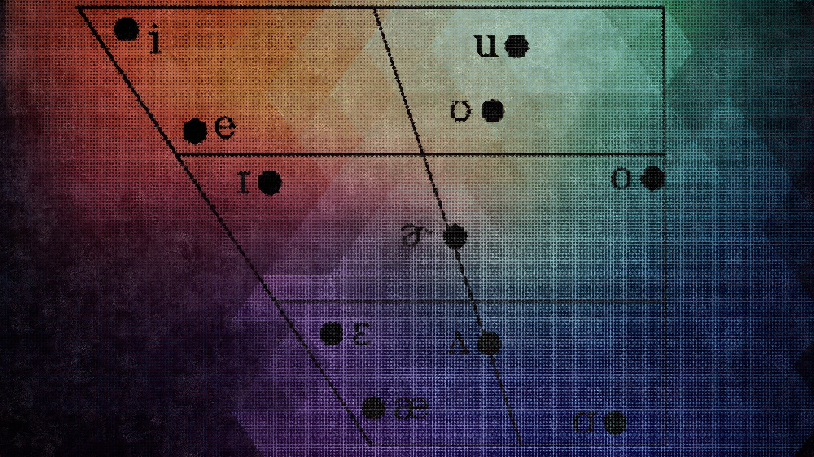

What's Linguistics

Languages are one of the most fascinating and core aspects of human culture and understanding. The scientific look at one's own language, a lot of other languages, and the forms of communication of other living beings as well, is an interesting area to study.
- Where did languages come from?
- Why are they so different?
- Do they have much in common?
- What is the relationship between our languages and our ways of thinking, feeling, and living?
- How do languages impact the society around us?
^ Linguistics studies these questions in depth ^
Many people think that a linguist is someone who speaks many languages and works as a language teacher or as an interpreter at the United Nations. In fact, these people are more accurately called polyglots. While many linguists are polyglots, the focus of linguistics is about languages in general and not how many. To put it simply, linguistics is the scientific study of language. It aims to understand how language gets processed in the mind and how language itself works. Linguists observe patterns within and across languages to try to understand how and why they are different and what makes them alike.
It comprises sub-fields that cover phonetics, phonology, morphology, semantics, syntax, writing systems, sociolinguistics, historical linguistics, computational linguistics, psycholinguistics, pragmatics, applied linguistics, dialectology, comparative linguistics etc. Check out what each of these are by ‘googling’ them up!
Ok, we are done with the (dry?) universally present definitions of Linguistics. Let’s see if you can solve this problem of defining Linguistics by visiting these links, take a break and surf through, and try to get an idea of what Linguistics is:
Web Links
There are many more resources if you want to explore more about Linguistics in general (not required for the Olympiad itself). Find them on the Resources page, below the table of graded past problems.
(P.S. there is a huge area of Linguistic(s) Humour, be sure to have lols, rofls while on the way to enlightenment)